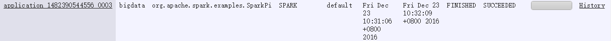
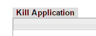
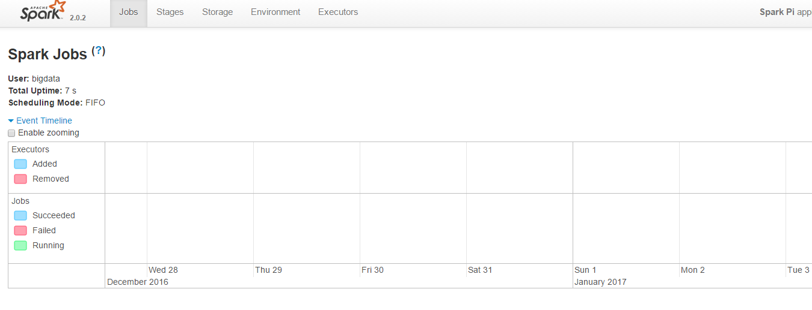

工业大数据实时分析与可视化 (Spark版) 部署文档
| 撰写人 | 撰写时间 | 版本 |
|---|---|---|
| 李捷承 | 2016.12.28 | 1.0 |
目录
工业大数据实时分析与可视化 (Spark版) 部署文档目录0 简介0.1 项目目标0.2 系统简介1 Hadoop1.1 前置1.2 下载与解压1.3 配置环境变量: 在 /etc/profile (or ~/.bashrc) 添加如下内容, 然后 重新登陆 或 source /etc/profile (or ~/.bashrc)1.4 更改所属权1.5 配置 Hadoop1.5.1 HDFS 配置文件1.5.2 Yarn 配置文件1.5.3 用 scp 拷贝 slave 机上1.5.4 hdfs init1.5.5 启动与关闭1.6 Tips2 HBase2.1 前置2.2 下载与解压2.3 配置环境变量: 在 /etc/profile (or ~/.bashrc) 添加如下内容, 然后 重新登陆 或 source /etc/profile (or ~/.bashrc)2.4 更改所属权2.5 配置文件2.6 启动与关闭2.7 hbase shell2.8 修改 ulimit 限制3 Spark on YARN 部署3.1 安装配置 Hadoop3.2 下载与解压3.3 配置环境变量: 在 /etc/profile (or ~/.bashrc) 添加如下内容, 然后 重新登陆 或 source /etc/profile (or ~/.bashrc)3.4 启动 HDFS & YARN3.5 在 Yarn 上运行 Spark 程序3.6 Spark Streaming 可配置的属性
0 简介
0.1 项目目标
工业 大数据 实时 分析 与 可视化
0.2 系统简介
系统版本:
OS: CentOS 7 1511 版 Python: 2.7.5 (CentOS 7 自带) Java: 1.8.0_65 (CentOS 7 自带) Hadoop 2.7.3 HBase 1.2.4 Spark: 2.0.2 Kafka: 0.9.0.1
IP 及 端口 分配:
| IP | Hostname |
|---|---|
| 192.168.1.170 | master |
| 192.168.1.171 | slave1 |
| 192.168.1.172 | slave2 |
| 192.168.1.173 | slave3 |
PS: 建议直接在 firewall 中配置这些机器之间的互访不做端口过滤. 使用 rich rule: 对指定的 IP 不做拦截. 例如要设置来自 192.168.1.1 的访问不做端口过滤, 命令如下
xxxxxxxxxxsudo firewall-cmd --permanent --add-rich-rule="rule family='ipv4' source address='192.168.1.1' accept"1 Hadoop
1 台 master, 3 台 slave
| 机器名 | IP 地址 | 作用 |
|---|---|---|
| master | 192.168.1.170 | NameNode, JobTracker |
| slave1 | 192.168.1.171 | DataNode, TaskTracker |
| slave2 | 192.168.1.172 | DataNode, TaskTracker |
| slave3 | 192.168.1.173 | DataNode, TaskTracker |
1.1 前置
- 安装 JDK: sun JDK or openJDK
sudo yum install java-1.8.0-openjdk-devel.x86_64 - IP 映射: 配置每台机器的 /etc/hosts 保证各台机器之间通过机器名可以互访
- master 机对 slave 机能够 ssh 免密码登陆: 将 master 机的 ssh 公钥文件 id_rsa.pub 的内容追加到 authorized_keys 中即可
在 master 机上
xcd ~ # 最好在要配置的用户的家目录下ssh-keygen -t rsa -P '' -f ~/.ssh/id_rsa # 生成 rsa 密钥对, 也可以选 dsascp ~/.ssh/id_rsa.pub username@slave1:~/master.pub # 将 master 机公钥文件 id_rsa.pub 传送到两个从机scp ~/.ssh/id_rsa.pub username@slave2:~/master.pubscp ~/.ssh/id_rsa.pub username@slave3:~/master.pub在 slave 机上
xxxxxxxxxxcat ~/master.pub >> ~/.ssh/authorized_keyschmod 644 ~/.ssh/authorized_keys # 修改权限ssh master # 验证, 第一次要输入 'yes' 确认加入 the list of known hosts1.2 下载与解压
下载: http://hadoop.apache.org/releases.html
xxxxxxxxxxtar xzf hadoop-2.7.3.tar.gz -C /home/bigdata1.3 配置环境变量: 在 /etc/profile (or ~/.bashrc) 添加如下内容, 然后 重新登陆 或 source /etc/profile (or ~/.bashrc)
四台机器上都要做
xxxxxxxxxxexport HADOOP_HOME=/home/bigdata/hadoop-2.7.3export PATH=$PATH:$HADOOP_HOME/bin:$HADOOP_HOME/sbinexport CLASSPATH=$CLASSPATH:`$HADOOP_HOME/bin/hadoop classpath --glob`1.4 更改所属权
若是安装到 /usr/local 目录下, 要对用户账户赋予所属权
xxxxxxxxxxsudo chown -R will:will $HADOOP_HOME1.5 配置 Hadoop
四台机器的配置完全一样, 只需配置完一台, 再复制到其余三台机器上就行
1.5.1 HDFS 配置文件
$HADOOP_HOME/etc/hadoop/hadoop-env.shhadoop 运行环境配置, 修改如下位置
xxxxxxxxxxexport JAVA_HOME=/usr/lib/jvm/java$HADOOP_HOME/etc/hadoop/core-site.xml
xxxxxxxxxx<configuration> <property> <name>fs.defaultFS</name> <value>hdfs://master:9000</value> <description>配置 NameNode 的 URI, 位置为主机的 9000 端口</description> </property> <property> <name>hadoop.tmp.dir</name> <value>/home/bigdata/work/hdfs</value> -------------自己设! <description>配置 hadoop 的 tmp 目录的根位置, 最好配置, 如果在新增节点或者其他情况下莫名其妙的 DataNode 启动不了, 就删除此 tmp 目录即可. 不过如果删除了 NameNode 机器的此目录, 那么就需要重新执行 HDFS 格式化的命令.</description> </property></configuration>$HADOOP_HOME/etc/hadoop/hdfs-site.xmlHDFS 的配置文件
xxxxxxxxxx<configuration> <property> <name>dfs.http.address</name> <value>master:50070</value> <description>配置 HDFS 的 http 的访问位置</description> </property> <property> <name>dfs.namenode.secondary.http-address</name> <value>master:50090</value> </property> <property> <name>dfs.replication</name> <value>3</value> <description>配置文件块的副本数, 不能大于从机的个数, 一般设为 3</description> </property></configuration>PS: 还可以配置下面两个属性
* dfs.namenode.name.dir 在本地文件系统上, NameNode 永久存储命名空间和事务日志的路径. 如果这是以逗号分隔的目录列表, 那么将在所有目录中复制名称表, 以实现冗余. * dfs.datanode.data.dir 在本地文件系统上, DataNode 存储文件块的路径. 如果这是以逗号分隔的目录列表, 则数据将存储在所有命名目录中, 通常在不同的设备上.
$HADOOP_HOME/etc/hadoop/slaves
xxxxxxxxxx# 设置从节点 hostname, 一行一个slave1slave2slave31.5.2 Yarn 配置文件
$HADOOP_HOME/etc/hadoop/yarn-env.shyarn 运行环境配置, 修改如下位置
xxxxxxxxxxexport JAVA_HOME=/usr/lib/jvm/java$HADOOP_HOME/etc/hadoop/yarn-site.xml
xxxxxxxxxx<configuration> <property> <name>yarn.nodemanager.aux-services</name> <value>mapreduce_shuffle</value> </property> <property> <name>yarn.resourcemanager.webapp.address</name> <value>master:8088</value> <description>yarn 的 web UI</description> </property> <property> <name>yarn.resourcemanager.hostname</name> <value>master</value> </property></configuration>$HADOOP_HOME/etc/hadoop/mapred-site.xml先把模板文件复制一份
xxxxxxxxxxcp mapred-site.xml.template mapred-site.xml配置如下
xxxxxxxxxx<configuration> <property> <name>mapreduce.framework.name</name> <value>yarn</value> </property> <property> <name>mapreduce.jobhistory.address</name> <value>master:10020</value> </property> <property> <name>mapreduce.jobhistory.webapp.address</name> <value>master:19888</value> <description>jobhistory 的 web UI</description> </property></configuration>1.5.3 用 scp 拷贝 slave 机上
xxxxxxxxxxscp -r ~/hadoop-2.7.3 username@slave1:~scp -r ~/hadoop-2.7.3 username@slave2:~scp -r ~/hadoop-2.7.3 username@slave3:~1.5.4 hdfs init
第一次启动 HDFS 时, 必须格式化, 在 shell 中执行: hdfs namenode -format
1.5.5 启动与关闭
- hdfs 启动
xxxxxxxxxxstart-dfs.sh然后打开页面验证 hdfs 安装成功: http://master_hostname:50070/
- hdfs 关闭
xxxxxxxxxxstop-dfs.sh- yarn 启动
xxxxxxxxxxstart-yarn.sh然后打开页面验证 yarn 安装成功: http://master_hostname:8088/
- yarn 关闭
xxxxxxxxxxstop-yarn.sh1.6 Tips
- 在 master/slave 机器上执行
jps命令可以看到后台运行的 java 程序
xxxxxxxxxx[bigdata@master ~]$ jps43206 NameNode43398 SecondaryNameNode43551 ResourceManager43950 Jps xxxxxxxxxx[bigdata@slave1 ~]$ jps32019 DataNode32658 NodeManager33267 Jpshadoop 组件的 web-ui
- NameNode http://master_hostname:50070
- ResourceManager http://master_hostname:8088
- MapReduce JobHistory 服务器 http://master_hostname:19888 (这个的话, 要先启动
mr-jobhistory-daemon.sh start historyserver, 关闭命令是mr-jobhistory-daemon.sh stop historyserver)
先开 hdfs, 再开 yarn; 先关 yarn, 再关 hdfs
遇到问题时, 先查看 logs, 很有帮助
start-balancer.sh, 可以使 DataNode 节点上选择策略重新平衡 DataNode 上的数据块的分布
添加节点:
- 建立 ssh 无密访问
- 在 master 机器的 $HADOOP_HOME/etc/hadoop/slave 文件中添加新机器的 hostname
- 将主机的 hadoop 所有文件拷贝到新机器(scp 命令), 根据新机器的环境不同改一下配置文件(如 $JAVA_HOME)
- 配置环境变量: $HADOOP_HOME 等
2 HBase
1 台 master, 3 台 slave
| HostName | IP | Master | RegionServer |
|---|---|---|---|
| master | 192.168.125.170 | yes | no |
| slave1 | 192.168.125.171 | backup | yes |
| slave2 | 192.168.125.172 | no | yes |
| slave3 | 192.168.125.173 | no | yes |
2.1 前置
安装 JDK 与 Hadoop(见Hadoop 部署)
2.2 下载与解压
下载: http://www.apache.org/dyn/closer.cgi/hbase/
xxxxxxxxxxtar xzf hbase-1.2.4-bin.tar.gz -C /home/bigdataPS: 确保你下载的版本与你现存的 Hadoop 版本兼容(兼容列表)
2.3 配置环境变量: 在 /etc/profile (or ~/.bashrc) 添加如下内容, 然后 重新登陆 或 source /etc/profile (or ~/.bashrc)
四台机器上都要做
xxxxxxxxxxexport HBASE_HOME=/home/bigdata/hbase-1.2.4export PATH=$PATH:$HBASE_HOME/bin2.4 更改所属权
若是安装到 /usr/local 目录下, 要对用户账户赋予所属权
xxxxxxxxxxsudo chown -R will:will $HBASE_HOME2.5 配置文件
四台机器的配置完全一样, 只需配置完一台, 再复制到其余三台机器上就行
$HBASE_HOME/conf/hbase-env.sh
xxxxxxxxxxexport JAVA_HOME=/usr/lib/jvm/java# 使用独立的 ZooKeeper 而不使用内置 ZooKeeperexport HBASE_MANAGES_ZK=false$HBASE_HOME/conf/hbase-site.xml
xxxxxxxxxx<configuration> <property> <name>hbase.rootdir</name> <value>hdfs://master:9000/hbase</value> <description>是 hadoop 配置中 fs.defaultFS 的下级目录</description> </property> <property> <name>hbase.cluster.distributed</name> <value>true</value> </property> <!-- 因为我们用自己的 zookeeper, 所以不设置下面这几项 --> <!-- <property> <name>hbase.zookeeper.quorum</name> <value>master,slave1,slave2,slave3</value> <description>zookeeper 集群列表</description> </property> <property> <name>hbase.zookeeper.property.dataDir</name> <value>/home/bigdata/tmp/hbase-data</value> <description>对应 zookeeper/config/zoo.cfg 中的 dataDir</description> </property> --></configuration>$HBASE_HOME/conf/regionservers去掉 localhost, 添加运行 RegionServer 的机器的 hostname(一行一条)
xxxxxxxxxxslave1slave2slave3- 配置 backup Master, 在
conf/目录下建立文件backup-masters, 添加作为 backup Master 的机器的 hostname(一行一条)
xxxxxxxxxxslave1- 以上在一台机器上就配置完了, 传送到所有机器上就行了
xxxxxxxxxxscp -r ~/hbase-1.2.4 username@slave1:~scp -r ~/hbase-1.2.4 username@slave2:~scp -r ~/hbase-1.2.4 username@slave3:~2.6 启动与关闭
- 启动: 只需在 master 机上运行下面这条命令就行了
xxxxxxxxxxstart-hbase.sh验证
- web-UI: http://master:16010
- 终端执行
jps, 显示如下
master 机
xxxxxxxxxx$ jps20355 Jps20137 HMasterslave 机
xxxxxxxxxx$ jps13901 Jps13737 HRegionServer- 关闭
xxxxxxxxxxstop-hbase.sh2.7 hbase shell
- 用 shell 连接 HBase.
xxxxxxxxxxbin/hbase shell- 输入 help 然后 Enter 可以看到 hbase shell 命令的帮助. 要注意的是表名, 行和列需要加引号.
- create: 建表
xxxxxxxxxxhbase(main):001:0> create 'test', 'cf'0 row(s) in 0.4170 seconds=> Hbase::Table - test- list: 列出所有表
xxxxxxxxxxhbase(main):002:0> list 'test'TABLEtest1 row(s) in 0.0180 seconds=> ["test"]- put: 插入行
xxxxxxxxxxhbase(main):003:0> put 'test', 'row1', 'cf:a', 'value1'0 row(s) in 0.0850 secondshbase(main):004:0> put 'test', 'row2', 'cf:b', 'value2'0 row(s) in 0.0110 secondshbase(main):005:0> put 'test', 'row3', 'cf:c', 'value3'0 row(s) in 0.0100 seconds- scan: 全表输出
xxxxxxxxxxhbase(main):006:0> scan 'test'ROW COLUMN+CELL row1 column=cf:a, timestamp=1421762485768, value=value1 row2 column=cf:b, timestamp=1421762491785, value=value2 row3 column=cf:c, timestamp=1421762496210, value=value33 row(s) in 0.0230 seconds- get: 输出一行
xxxxxxxxxxhbase(main):007:0> get 'test', 'row1'COLUMN CELL cf:a timestamp=1421762485768, value=value11 row(s) in 0.0350 seconds- 删除表: 先 disable 表, 再 drop 表. 可以 re-enable 表
- disable: Disable 表
xxxxxxxxxxhbase(main):008:0> disable 'test'0 row(s) in 1.1820 seconds- enable: Enable 表
xxxxxxxxxxhbase(main):009:0> enable 'test'0 row(s) in 0.1770 secondshbase(main):010:0> disable 'test'0 row(s) in 1.1820 seconds- drop: Drop 表
xxxxxxxxxxhbase(main):011:0> drop 'test'0 row(s) in 0.1370 seconds- exit: 退出 hbase shell
xxxxxxxxxxhbase(main):012:0> exit2.8 修改 ulimit 限制
HBase 会在同一时间打开大量的文件句柄和进程, 超过 Linux 的默认限制, 导致可能会出现如下错误.
xxxxxxxxxx2010-04-06 03:04:37,542 INFO org.apache.hadoop.hdfs.DFSClient: Exception increateBlockOutputStream java.io.EOFException2010-04-06 03:04:37,542 INFO org.apache.hadoop.hdfs.DFSClient: Abandoning block blk_-6935524980745310745_1391901所以编辑 /etc/security/limits.conf 文件, 添加以下两行, 提高能打开的句柄数量和进程数量. 注意将 bigdata 改成你运行 HBase 的用户名.
xxxxxxxxxxbigdata - nofile 32768bigdata - nproc 32000还需要在 /etc/pam.d/common-session 加上这一行:
xxxxxxxxxxsession required pam_limits.so否则在 /etc/security/limits.conf 上的配置不会生效.
最后还要注销(logout 或者 exit)后再登录, 这些配置才能生效! 使用 ulimit -n -u 命令查看最大文件和进程数量是否改变了. 记得在每台安装 HBase 的机器上运行哦.
3 Spark on YARN 部署
Spark 官方提供了三种集群部署方案: Standalone, Mesos, Yarn. 因为我们还将用到 HBase, 所以选择 Yarn 做 Spark 集群管理.
Spark on YARN 的配置很简单, 只需要配置好 YARN 集群, 然后在一台机器上解压 Spark 包, 在提交 spark 程序时, 指定 master 参数为 yarn, deploy-mode 参数为 cluster 或 client, 即可.
3.1 安装配置 Hadoop
详见 Hadoop 部署)
3.2 下载与解压
下载: http://spark.apache.org/downloads.html, 选择 spark-2.0.2-bin-hadoop2.7.tgz
xxxxxxxxxxtar xzf spark-2.0.2-bin-hadoop2.7.tgz -C /home/bigdata3.3 配置环境变量: 在 /etc/profile (or ~/.bashrc) 添加如下内容, 然后 重新登陆 或 source /etc/profile (or ~/.bashrc)
xxxxxxxxxxexport SPARK_HOME=/home/bigdata/spark-2.0.2-bin-hadoop2.7export PATH=$PATH:$SPARK_HOME/bin3.4 启动 HDFS & YARN
xxxxxxxxxxstart-dfs.shstart-yarn.sh3.5 在 Yarn 上运行 Spark 程序
以 YARN-cluster 形式提交示例程序
xxxxxxxxxxcd $SPARK_HOMEbin/spark-submit --class org.apache.spark.examples.SparkPi \ --master yarn \ --deploy-mode cluster \ examples/jars/spark-examples*.jar \ 10到 Yarn-UI(http://master_hostname:8088), 找到任务

点进去, 左上角的 Kill Application 用于关闭这个任务

中间的 ApplicationMaster 可以跳转到 Spark-UI 查看 spark 对这个任务的 UI 界面


下面的是对这个任务的描述, 如下, 只在一个节点上运行, 点击 Logs 可以查看 logs 输出

这是示例程序的输出

3.6 Spark Streaming 可配置的属性
| Property Name | Default | Meaning |
|---|---|---|
spark.streaming.backpressure.enabled | false | Enables or disables Spark Streaming's internal backpressure mechanism (since 1.5). This enables the Spark Streaming to control the receiving rate based on the current batch scheduling delays and processing times so that the system receives only as fast as the system can process. Internally, this dynamically sets the maximum receiving rate of receivers. This rate is upper bounded by the values spark.streaming.receiver.maxRate andspark.streaming.kafka.maxRatePerPartition if they are set (see below). |
spark.streaming.backpressure.initialRate | not set | This is the initial maximum receiving rate at which each receiver will receive data for the first batch when the backpressure mechanism is enabled. |
spark.streaming.blockInterval | 200ms | Interval at which data received by Spark Streaming receivers is chunked into blocks of data before storing them in Spark. Minimum recommended - 50 ms. See the performance tuningsection in the Spark Streaming programing guide for more details. |
spark.streaming.receiver.maxRate | not set | Maximum rate (number of records per second) at which each receiver will receive data. Effectively, each stream will consume at most this number of records per second. Setting this configuration to 0 or a negative number will put no limit on the rate. See the deployment guide in the Spark Streaming programing guide for mode details. |
spark.streaming.receiver.writeAheadLog.enable | false | Enable write ahead logs for receivers. All the input data received through receivers will be saved to write ahead logs that will allow it to be recovered after driver failures. See the deployment guidein the Spark Streaming programing guide for more details. |
spark.streaming.unpersist | true | Force RDDs generated and persisted by Spark Streaming to be automatically unpersisted from Spark's memory. The raw input data received by Spark Streaming is also automatically cleared. Setting this to false will allow the raw data and persisted RDDs to be accessible outside the streaming application as they will not be cleared automatically. But it comes at the cost of higher memory usage in Spark. |
spark.streaming.stopGracefullyOnShutdown | false | If true, Spark shuts down the StreamingContext gracefully on JVM shutdown rather than immediately. |
spark.streaming.kafka.maxRatePerPartition | not set | Maximum rate (number of records per second) at which data will be read from each Kafka partition when using the new Kafka direct stream API. See the Kafka Integration guide for more details. |
spark.streaming.kafka.maxRetries | 1 | Maximum number of consecutive retries the driver will make in order to find the latest offsets on the leader of each partition (a default value of 1 means that the driver will make a maximum of 2 attempts). Only applies to the new Kafka direct stream API. |
spark.streaming.ui.retainedBatches | 1000 | How many batches the Spark Streaming UI and status APIs remember before garbage collecting. |
spark.streaming.driver.writeAheadLog.closeFileAfterWrite | false | Whether to close the file after writing a write ahead log record on the driver. Set this to 'true' when you want to use S3 (or any file system that does not support flushing) for the metadata WAL on the driver. |
spark.streaming.receiver.writeAheadLog.closeFileAfterWrite | false | Whether to close the file after writing a write ahead log record on the receivers. Set this to 'true' when you want to use S3 (or any file system that does not support flushing) for the data WAL on the receivers. |